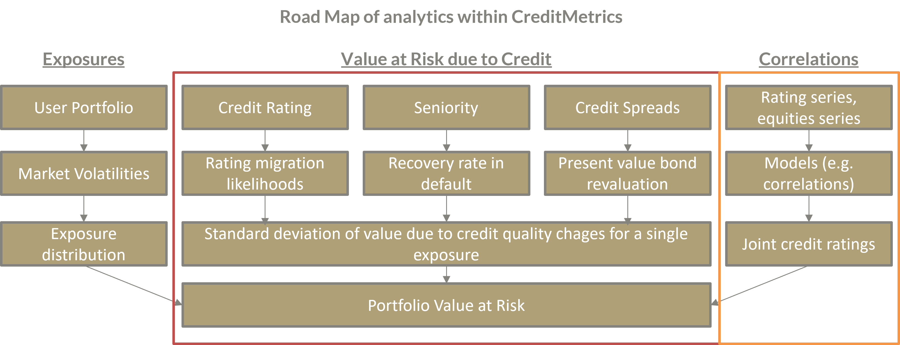

Credit Metrics
CreditMetrics — overview and scope
This notebook implements a CreditMetrics-style credit migration model (originally developed by J.P. Morgan). Note: CreditMetrics (credit migration and valuation changes due to rating transitions) is a distinct concept from RiskMetrics / MSCI RiskMetrics (market risk and volatility modelling). Avoid mixing both names.
Model summary
Goal: quantify portfolio value changes driven by credit rating migrations and defaults over a fixed horizon T (e.g. 1 year).
Inputs:
Transition matrix (N x N): probabilities to move from initial rating i to target rating j over horizon T.
Positions: exposures and recovery rates per instrument (grouped by issuer).
Issuer metadata: id, name, rating, country, (used to map index correlations).
Historical price series: indices and issuer equity proxies used to estimate correlations.
Parameters: risk-free rate r, horizon t, number of simulations n_sim, random seed, confidence level for VaR/ES.
Key steps:
Convert transition probabilities to thresholds: for each initial rating compute cumulative target probs and apply norm.ppf to get cutoffs.
Estimate correlations between issuers and reference indices from historical returns.
Generate correlated normal factors via Cholesky: for each simulation draw index factors Y and issuer idiosyncratic Z. Asset score: r_k = rho * Y + sqrt(1 - rho^2) * Z_k.
Map simulated score r_k against cutoffs to determine target rating and resulting present value V_t for that rating.
Compute loss per scenario and issuer: Loss = V_t - ExpectedValue (EV). Aggregate to portfolio loss distribution.
Compute portfolio VaR and ES at the given confidence level.
References
J.P. Morgan, “CreditMetrics — A Credit Risk Measurement Framework” (1997)
Introduction
CreditMetrics was developed by J.P Morgan in 1997 and is used as a tool for accessing portfolio risk due to changes in debt value caused by changes in credit quality. CreditMetrics is a framework that enables business owners to quantify the impact of credit risk on the value of their portfolios and assess risk.
Approach
Identify the credit-sensitive instruments in the portfolio. These are instruments whose value depends on the creditworthiness of a counterparty or debtor. Examples of credit-sensitive instruments are loans, bonds, credit default swaps and other derivatives.
Assign a credit rating to each counterparty or obligor. A credit rating is a measure of the probability of default or downgrade of a counterparty or obligor, based on historical data and expert judgement. Credit ratings are usually expressed in letter grades such as AAA, AA, A, BBB, BB, B, CCC, CC, C and D. The lower the rating, the higher the probability of default. The lower the rating, the higher the risk of default or downgrade.
Estimate the transition matrix and recovery rate for each rating category. A transition matrix is a table that shows the probability of a counterparty or obligor moving from one rating category to another over a given time horizon, such as one year. A recovery rate is the percentage of an instrument’s face value that can be recovered in the event of a default or downgrade. For example, if a bond with a nominal value of USD 100 defaults and the bondholder recovers USD 40, the recovery rate is 40%.
Simulate the future credit ratings and values of the credit-sensitive instruments in the portfolio. Using the transition matrix and recovery rate, CreditMetrics can create scenarios of possible future credit ratings and values of the credit-sensitive instruments in the portfolio, taking into account the correlations between them. Correlations are measures of how the credit quality of different counterparties or debtors tends to develop together. For example, if two counterparties or obligors are in the same industry or region, there may be a positive correlation, meaning that their credit quality tends to improve or deteriorate together.
Calculate the credit value at risk (CVaR) and the credit value distribution of the portfolio. CVaR is a measure of the potential loss in value of the portfolio due to credit risk over a given time horizon and confidence level. For example, a CVaR of USD 10 million at a 95% confidence level over one year means that there is a 5% probability that the portfolio will lose more than USD 10 million in value over one year due to credit risk. The credit value distribution is a chart that shows the probability of different losses or gains in the value of the portfolio due to credit risk.
Analyse the sources and drivers of credit risk in the portfolio. CreditMetrics can provide various reports and statistics to help business owners understand the sources and drivers of credit risk in their portfolio, such as the contribution of each instrument, counterparty or rating category to CVaR and credit value distribution, as well as the sensitivity of portfolio value to changes in credit ratings, recovery rates or correlations, and the diversification benefits of adding or removing instruments or counterparties from the portfolio.
Implement strategies to mitigate or hedge credit risk in the portfolio. Based on the credit risk analysis, entrepreneurs can implement strategies to mitigate or hedge the credit risk in their portfolio, such as adjusting the portfolio composition, diversifying the portfolio across different instruments, counterparties or rating categories, transferring the credit risk to third parties, e.g. insurers or guarantors, or using credit derivatives such as credit default swaps to hedge against certain credit events.
Assumptions
Distribution of credit ratings and assets:
CreditMetrics assumes that the portfolio’s credit ratings and assets follow a normal distribution (or lognormal distribution), which means that extreme events are rare and symmetric. In reality, however, credit ratings and assets can exhibit fat tails, skewness and correlation, meaning that extreme events are more likely and asymmetric. During the 2008 financial crisis, for example, many assets experienced significant downgrades and losses that were not captured by the normal distribution. To address this limitation, CreditMetrics can be modified to use alternative distributions that better reflect the empirical characteristics of credit risk, such as the Student-T distribution or the skewed normal distribution.
Transition matrix and the recovery rate:
CreditMetrics uses a transition matrix to estimate the probability that an asset will move from one credit rating to another over a given time horizon. In addition, a recovery rate is used to estimate the percentage of the asset that can be recovered in the event of default. However, these parameters are not constant and can vary depending on the economic cycle, sector and issuer. For example, during a recession, the transition matrix may show a higher probability of downgrades and defaults and the recovery rate may be below average. To address this limitation, CreditMetrics can be modified to use dynamic transition matrices and recovery rates that reflect current and expected market conditions, such as macroeconomic factors, industry outlook and issuer-specific information.
Implementation approach
The process of asset value changes of the company determines its creditworthiness and defaults
The model links asset value changes to credit rating changes and explains how the firm value-based model is parameterised
The value of a company’s assets determines its ability to pay its debtors
We assume that there are a number of tiers to the asset value that determine a company’s credit rating at the end of the period
The percentage changes in asset value are normally distributed and parameterised by a mean \(\mu\) and a standard deviation \(/delta\) (not the volatility of the value of a credit instrument - the volatility of the return on assets for a given name)
There are threshold values for the return on assets \(𝑍_{𝐷EF}\), \(𝑍_{𝐶𝐶𝐶}\), \(𝑍_{𝐵𝐵𝐵}\), etc., so that if \(𝑟_𝑘 < 𝑍𝐷𝑒𝑓\), then the debitor defaults, if \(𝑍_{𝐷EF}<\)𝑟_𝑘<𝑍_{𝐶𝐶𝐶}$, then the debitor is downgraded to CCC
Modelling the return on an asset:
\[r_k=pY+\sqrt{1-p^2}Z_k\]

Basic Assumptions
Number N of creditworthiness classes (or rating classes)
Bond prices are constant within a rating class
Loss is quantified by a change in credit rating for the period T1=1 (e.g. one year)
Losses result exclusively from changes in creditworthiness - losses due to changes in market prices are not considered
Import Librarieres für RiVaPy Test
[1]:
# Cell 1 - Imports and helpers
import sys
sys.path.append('../../../..')
import pandas as pd
import numpy as np
import yfinance as yf
import plotly.express as px
from datetime import datetime
import rivapy
# from rivapy.instruments.components import Issuer
# from rivapy.credit.creditmetrics import CreditMetricsModel
pd.set_option("display.width", 160)
pd.set_option("display.max_columns", 50)
c:\Users\Anwender\source\repos\RiVaPy\docs\source\notebooks\credit\../../../..\rivapy\__init__.py:13: UserWarning: The pyvacon module is not available. You may not use all functionality without this module. Consider installing pyvacon.
warnings.warn("The pyvacon module is not available. You may not use all functionality without this module. Consider installing pyvacon.")
[20]:
np.set_printoptions(formatter={'float': '{: 0.5f}'.format})
Required test data
Transition matrix
[2]:
# User inputs
TransMat = np.matrix("""
90.81, 8.33, 0.68, 0.06, 0.08, 0.02, 0.01, 0.01;
0.70, 90.65, 7.79, 0.64, 0.06, 0.13, 0.02, 0.01;
0.09, 2.27, 91.05, 5.52, 0.74, 0.26, 0.01, 0.06;
0.02, 0.33, 5.95, 85.93, 5.30, 1.17, 1.12, 0.18;
0.03, 0.14, 0.67, 7.73, 80.53, 8.84, 1.00, 1.06;
0.01, 0.11, 0.24, 0.43, 6.48, 83.46, 4.07, 5.20;
0.21, 0, 0.22, 1.30, 2.38, 11.24, 64.86, 19.79""")/100
Download market data from Yahoo Finance (indices + 5 issuers)
[3]:
start = "2015-01-01"
end = "2025-10-31" # current date in your environment
tickers = [
"^GDAXI", # DAX
"^GSPC", # S&P500
"^FCHI", # CAC40
"VOW3.DE", # Volkswagen (DE)
"BAS.DE", # BASF (DE)
"GM", # General Motors (US)
"AAPL", # Apple (US)
"BNP.PA" # BNP Paribas (FR)
]
# download closing prices and merge on Date
df_list = []
for tk in tickers:
df = yf.download(tk, start=start, end=end)[["Close"]].rename(columns={"Close": tk})
df = df.reset_index()
df_list.append(df)
# merge sequentially on Date
df_merged = df_list[0]
for df in df_list[1:]:
df_merged = df_merged.merge(df, on="Date", how="outer")
# rename columns to friendly short names
rename_map = {
"^GDAXI": "DAX",
"^GSPC": "SP",
"^FCHI": "CAC",
"VOW3.DE": "VW",
"BAS.DE": "BASF",
"GM": "GM",
"AAPL": "Apple",
"BNP.PA": "BNP"
}
df_merged.rename(columns=rename_map, inplace=True)
df_merged = df_merged.sort_values("Date").reset_index(drop=True)
df_merged = df_merged.set_axis(['Date'] + list(rename_map.values()), axis=1, )
df_merged.head()
C:\Users\Anwender\AppData\Local\Temp\ipykernel_22384\2534265038.py:18: FutureWarning: YF.download() has changed argument auto_adjust default to True
df = yf.download(tk, start=start, end=end)[["Close"]].rename(columns={"Close": tk})
[*********************100%***********************] 1 of 1 completed
C:\Users\Anwender\AppData\Local\Temp\ipykernel_22384\2534265038.py:18: FutureWarning: YF.download() has changed argument auto_adjust default to True
df = yf.download(tk, start=start, end=end)[["Close"]].rename(columns={"Close": tk})
[*********************100%***********************] 1 of 1 completed
C:\Users\Anwender\AppData\Local\Temp\ipykernel_22384\2534265038.py:18: FutureWarning: YF.download() has changed argument auto_adjust default to True
df = yf.download(tk, start=start, end=end)[["Close"]].rename(columns={"Close": tk})
[*********************100%***********************] 1 of 1 completed
C:\Users\Anwender\AppData\Local\Temp\ipykernel_22384\2534265038.py:18: FutureWarning: YF.download() has changed argument auto_adjust default to True
df = yf.download(tk, start=start, end=end)[["Close"]].rename(columns={"Close": tk})
[*********************100%***********************] 1 of 1 completed
C:\Users\Anwender\AppData\Local\Temp\ipykernel_22384\2534265038.py:18: FutureWarning: YF.download() has changed argument auto_adjust default to True
df = yf.download(tk, start=start, end=end)[["Close"]].rename(columns={"Close": tk})
[*********************100%***********************] 1 of 1 completed
C:\Users\Anwender\AppData\Local\Temp\ipykernel_22384\2534265038.py:18: FutureWarning: YF.download() has changed argument auto_adjust default to True
df = yf.download(tk, start=start, end=end)[["Close"]].rename(columns={"Close": tk})
[*********************100%***********************] 1 of 1 completed
C:\Users\Anwender\AppData\Local\Temp\ipykernel_22384\2534265038.py:18: FutureWarning: YF.download() has changed argument auto_adjust default to True
df = yf.download(tk, start=start, end=end)[["Close"]].rename(columns={"Close": tk})
[*********************100%***********************] 1 of 1 completed
C:\Users\Anwender\AppData\Local\Temp\ipykernel_22384\2534265038.py:18: FutureWarning: YF.download() has changed argument auto_adjust default to True
df = yf.download(tk, start=start, end=end)[["Close"]].rename(columns={"Close": tk})
[*********************100%***********************] 1 of 1 completed
C:\Users\Anwender\AppData\Local\Temp\ipykernel_22384\2534265038.py:25: PerformanceWarning: dropping on a non-lexsorted multi-index without a level parameter may impact performance.
df_merged = df_merged.merge(df, on="Date", how="outer")
[3]:
| Date | DAX | SP | CAC | VW | BASF | GM | Apple | BNP | |
|---|---|---|---|---|---|---|---|---|---|
| 0 | 2015-01-02 | 9764.730469 | 2058.199951 | 4252.290039 | 103.257195 | 39.671352 | 26.952736 | 24.261047 | 27.449556 |
| 1 | 2015-01-05 | 9473.160156 | 2020.579956 | 4111.359863 | 99.749275 | 37.974976 | 26.558189 | 23.577570 | 26.116777 |
| 2 | 2015-01-06 | 9469.660156 | 2002.609985 | 4083.500000 | 100.371651 | 37.963596 | 26.960478 | 23.579796 | 25.433735 |
| 3 | 2015-01-07 | 9518.179688 | 2025.900024 | 4112.729980 | 100.994011 | 38.214062 | 27.726343 | 23.910431 | 25.008911 |
| 4 | 2015-01-08 | 9837.610352 | 2062.139893 | 4260.189941 | 104.021019 | 39.773819 | 28.004856 | 24.829124 | 25.819681 |
Prepare Issuer objects and Positions
[4]:
issuers_info = [
{"obj_id": "VOW", "name": "VW", "rating": "A", "country": "DE", "sector": "Industrials", "esg_rating": "AA"},
{"obj_id": "BASF", "name": "BASF", "rating": "BBB", "country": "DE", "sector": "Industrials", "esg_rating": "A"},
{"obj_id": "GM", "name": "GM","rating": "BB", "country": "US", "sector": "Industrials", "esg_rating": "BBB"},
{"obj_id": "AAPL", "name": "Apple", "rating": "AA", "country": "US", "sector": "Industrials", "esg_rating": "AAA"},
{"obj_id": "BNP", "name": "BNP", "rating": "A", "country": "FR", "sector": "Industrials", "esg_rating": "AA"},
]
issuer_list = [
rivapy.instruments.Issuer(obj_id=i["obj_id"], name=i["name"], rating=i["rating"], country=i["country"], sector=i["sector"], esg_rating=i["esg_rating"])
for i in issuers_info
]
# Create 10 positions, with some duplicates (same issuer appears multiple times)
positions = pd.DataFrame([
{"IssuerID": "VOW", "Exposure": 1_000_000, "RecoveryRate": 0.40},
{"IssuerID": "VOW", "Exposure": 500_000, "RecoveryRate": 0.40},
{"IssuerID": "BASF", "Exposure": 750_000, "RecoveryRate": 0.35},
{"IssuerID": "BASF", "Exposure": 250_000, "RecoveryRate": 0.40},
{"IssuerID": "GM", "Exposure": 600_000, "RecoveryRate": 0.30},
{"IssuerID": "GM", "Exposure": 400_000, "RecoveryRate": 0.45},
{"IssuerID": "AAPL", "Exposure": 1_200_000, "RecoveryRate": 0.45},
{"IssuerID": "BNP", "Exposure": 900_000, "RecoveryRate": 0.40},
{"IssuerID": "BNP", "Exposure": 100_000, "RecoveryRate": 0.40},
{"IssuerID": "AAPL", "Exposure": 300_000, "RecoveryRate": 0.45},
])
positions
[4]:
| IssuerID | Exposure | RecoveryRate | |
|---|---|---|---|
| 0 | VOW | 1000000 | 0.40 |
| 1 | VOW | 500000 | 0.40 |
| 2 | BASF | 750000 | 0.35 |
| 3 | BASF | 250000 | 0.40 |
| 4 | GM | 600000 | 0.30 |
| 5 | GM | 400000 | 0.45 |
| 6 | AAPL | 1200000 | 0.45 |
| 7 | BNP | 900000 | 0.40 |
| 8 | BNP | 100000 | 0.40 |
| 9 | AAPL | 300000 | 0.45 |
Configure indices list, mapping
[5]:
list_of_indices = ["DAX", "SP", "CAC"]
mapping_countries_on_indices = {"DE": "DAX", "US": "SP", "FR": "CAC"}
Configure model parameter (time horizons other than 1 are not implemented yet)
[6]:
n_sim = 1000000
seed = 42
r = 0.0
# t = 1.0
confidencelevel = 1.0
Utilisation of credit metrics model within RiVaPy
[7]:
# ensure stock data has Date column and other columns expected by model
stock_data = df_merged.copy()
# keep only columns we need (Date + indices + issuer tickers)
expected_cols = ["Date"] + list_of_indices + ["VW", "BASF", "GM", "Apple", "BNP"]
stock_data = stock_data[[c for c in expected_cols if c in stock_data.columns]]
# instantiate model
cm = rivapy.credit.CreditMetricsModel(
n_simulation=n_sim,
transition_matrix=TransMat,
position_data=positions,
issuer_data=issuer_list,
stock_data=stock_data,
r=r,
t=1.0,
confidencelevel=confidencelevel,
seed=seed,
list_of_indices=list_of_indices,
mapping_countries_on_indices=mapping_countries_on_indices,
)
MC-Simulation
[8]:
mc_scenarios, rr_scenarios, issuer_ids, issuer_names = cm.mc_calculation()
print("mc_scenarios shape:", getattr(mc_scenarios, "shape", None))
print("issuer_ids:", issuer_ids)
c:\Users\Anwender\source\repos\RiVaPy\docs\source\notebooks\credit\../../../..\rivapy\credit\creditmetrics.py:119: FutureWarning: The default fill_method='pad' in DataFrame.pct_change is deprecated and will be removed in a future version. Either fill in any non-leading NA values prior to calling pct_change or specify 'fill_method=None' to not fill NA values.
returns = mergedData.pct_change()
mc_scenarios shape: (1000000, 5)
issuer_ids: ['AAPL' 'BASF' 'BNP' 'GM' 'VOW']
[9]:
mc_scenarios.describe()
[9]:
| AAPL | BASF | BNP | GM | VOW | |
|---|---|---|---|---|---|
| count | 1000000.000000 | 1000000.000000 | 1000000.000000 | 1000000.000000 | 1000000.000000 |
| mean | -220.681148 | -3147.221156 | -525.265020 | -9762.214976 | -790.884810 |
| std | 8912.190968 | 29700.405362 | 14690.892796 | 66048.381580 | 22124.910294 |
| min | -824917.500000 | -636352.500000 | -599640.000000 | -633216.000000 | -899460.000000 |
| 25% | 0.000000 | 0.000000 | 0.000000 | 0.000000 | 0.000000 |
| 50% | 0.000000 | 0.000000 | 0.000000 | 0.000000 | 0.000000 |
| 75% | 0.000000 | 0.000000 | 0.000000 | 0.000000 | 0.000000 |
| max | 0.000000 | 1083.750000 | 300.000000 | 6720.000000 | 450.000000 |
Calculate VaR and Expected Shortfall
[10]:
loss_distribution = cm.get_loss_distribution(mc_scenarios)
portfolio_VaR = cm.get_portfolio_VaR(loss_distribution)
portfolio_ES = cm.get_portfolio_ES(loss_distribution)
print(f"Portfolio VaR ({confidencelevel}%): {portfolio_VaR:,.2f}")
print(f"Portfolio ES ({confidencelevel}%): {portfolio_ES:,.2f}")
Portfolio VaR (1.0%): 633,216.00
Portfolio ES (1.0%): 680,521.23
[11]:
fig = px.histogram(loss_distribution, nbins=100, title="Portfolio Loss Distribution")
fig.update_xaxes(title_text="Portfolio Loss")
fig.update_yaxes(title_text="Frequency")
fig.show()
Data type cannot be displayed: application/vnd.plotly.v1+json
[12]:
min(loss_distribution)
[12]:
-2242686.0